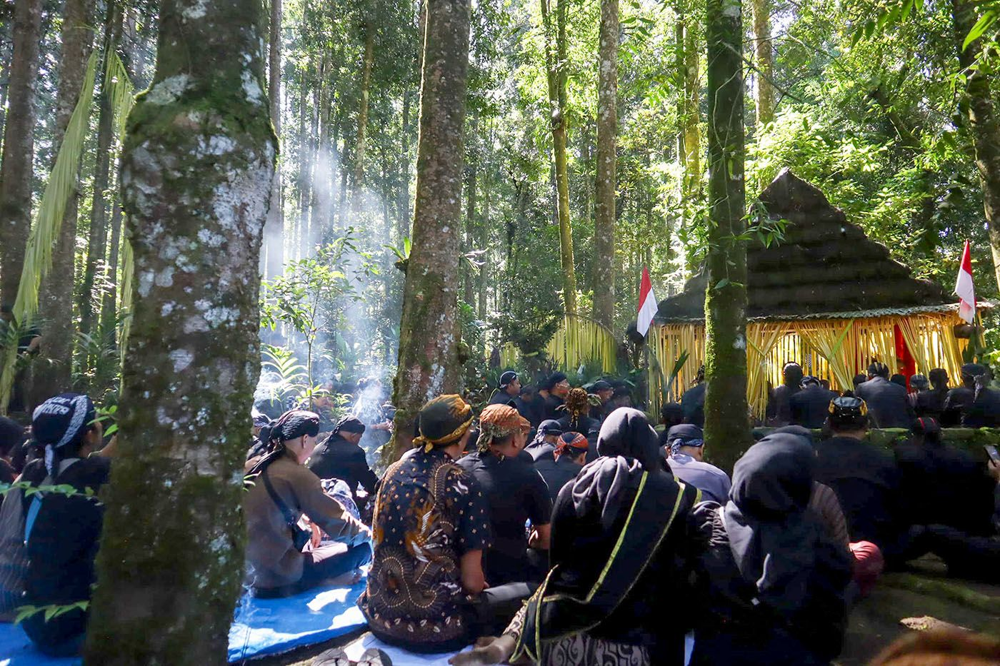
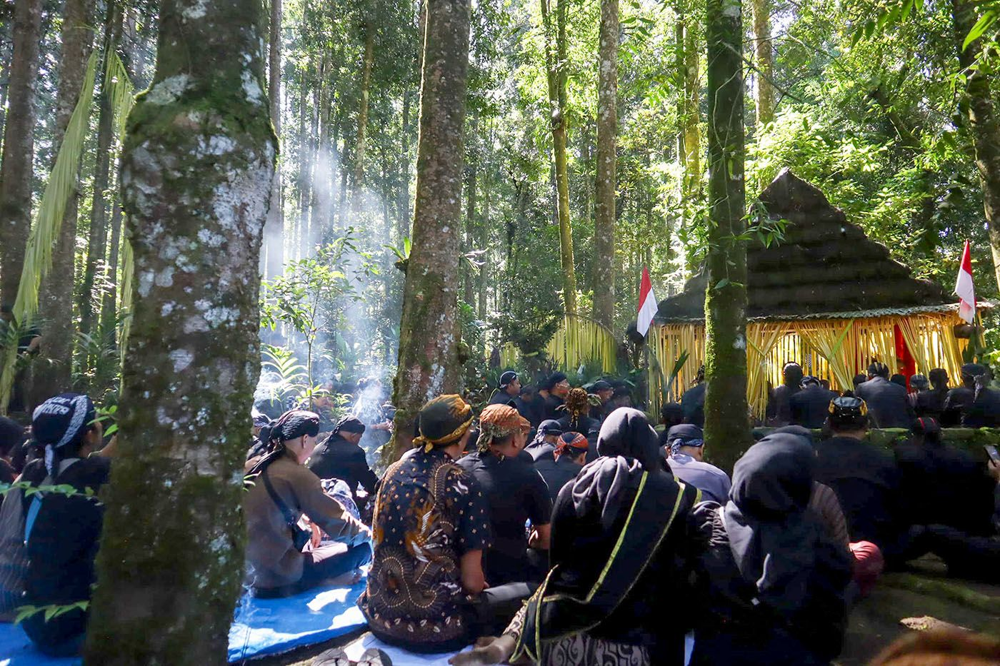

Pelestari Seni dan Budaya Nusantara yang Tetap Berdenyut di Era Modern

Desa Tlompakan di Kecamatan Tuntang, Kabupaten Semarang, merupakan desa dengan nuansa budaya Jawa yang kental. Seni karawitan menjadi identitas khas dan bagian penting dari kehidupan sosial serta spiritual warga.
Dengan adanya program pembinaan seni karawitan dan tari tradisional secara terstruktur dan berkelanjutan. Program ini mencakup pelatihan rutin oleh seniman lokal dan profesional, pendampingan kreatif bagi anak-anak dan remaja, penyediaan sarana latihan, serta ruang ekspresi budaya. Inovasi penting dalam program ini adalah fasilitasi pendaftaran Hak Kekayaan Intelektual (HKI) untuk karya seni warga desa, khususnya anak-anak, serta dokumentasi kegiatan secara profesional.
300+ Tahun
Sejarah Panjang
Kesenian unggulan
Kesenian Unggulan
50+ Seniman
Nayaga & Artisan
Berbagai bentuk ekspresi seni yang dijaga turun-temurun oleh masyarakat Desa Tlompakan

Karawitan gamelan menjadi identitas budaya desa, dimainkan lintas generasi, mencerminkan kelestarian seni tradisional secara aktif di tingkat dusun.

musik tradisional yang dihasilkan dari alat penumbuk padi (lesung dan alu), yang dimainkan secara ritmis oleh beberapa orang
Prajuritan Jaranan adalah tarian tradisional yang menggambarkan semangat dan keberanian para prajurit, dengan ciri khas menggunakan kuda-kudaan dari anyaman bambu.
Ritual dan adat istiadat yang menjadi nafas kehidupan masyarakat Desa Tlompakan
Tradisi ziarah dan doa bersama di makam leluhur sebagai bentuk penghormatan dan syukur.

Perayaan syukur atas hasil bumi dengan pertunjukan seni dua hari satu malam.

Pembersihan benda pusaka keramat setiap bulan Sura sebagai wujud penghormatan leluhur.

Dawuhan adalah kegiatan selametan sebagai tanda terimakasih kepada Tuhan karena sumber air yang mengaliri irigasi atau perswahan setiap petani di desa Tlompakan.

Tradisi Tawu Kali adalah tradisi turun temurun untuk membersihkan Kali yg ada di desa Tlompakan dalam setahun sekali. Biasanya tradisi tsb dilakukan ppada saat menjelang bulan puasa.
.Para anggota paguyuban kuda lumping desa tlompakan memainkan Kuda Lumping pada malam satu suro sebagai ngruwat tradisi & adat istiadat yg dijaga turun temurun
Ngumbah Jaran atau mencuci jaran adalah kegiatan anggotoa paguyuban jaranan di Desa Tlompakan yg dimana mereka setiap sehari setelah hari raya idl fitri mencuci Jaranan warisan leluhur. Kegiatan ini sudah ada turun temurun sejak dari dulu .
.
.
Potret kehidupan dan aktivitas seni budaya Desa Tlompakan
 
